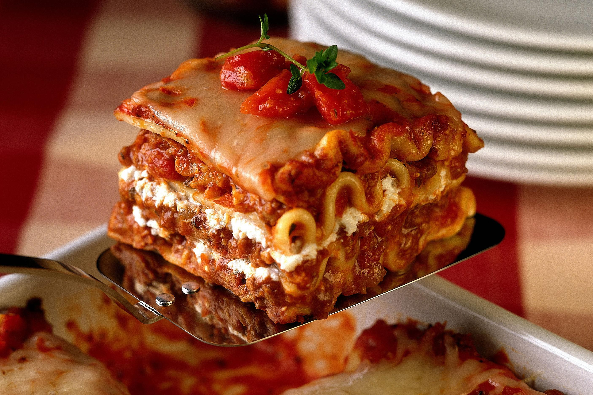

Lasagna

Description
A layered italian dish consisting of fresh lasagna sheets sanwhiched inbetween bechemel sauce, mozerella and meat sauce
Ingredients
- 1tbsp olive oil
- 1 Onion, diced
- 250g beeg, minced
- 1tbsp tomato puree
- 12 lasagna sheets
- 150mg mozerlla
- 400g tin chopped tomatoes
- 400g bechemel sauce jar
Steps
- In a pan, heat the olive oil and fry the oninion for 5 mins or till softened
- Add the mince and fry till golden
- Add the tomato puree, chopped tomatoes and water until the liquid has reduced
- Preheat the oven to 200 degrees celcius
- Layer the lasagna sheet starting with a third of the ragu, then lasagna sheets the the white sauce
- Place in oven and cook for 40-45 mins